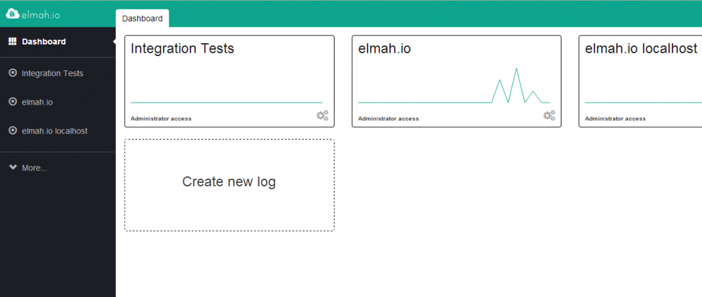
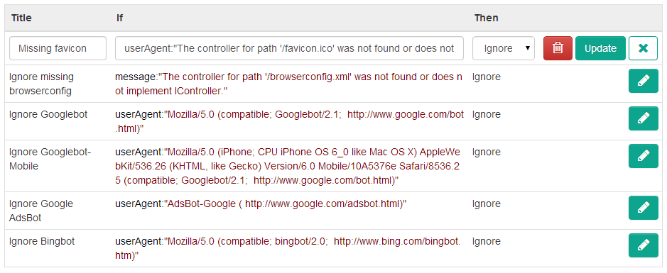

elmah.io 20140219 released
Thomas Ardal, February 19, 2014
Time for a new version. This release contains some exiting new stuff as well as the usual bug fixes and tweaks to make elmah.io the best cloud logging service out there.
Re-designed Dashboard
Like any good company, we eat our own dog food and use elmah.io for every project we do (including elmah.io itself). Navigating between the Dashboard, Search and Settings pages were quite extensive. We were surprised how often you guys did that and we decided to collect all of your feedback into a total re-design of the Dashboard page:

From the new Dashboard page, you can navigate directly to both Search and Settings of all of your logs.
Rules
Remember Ignore Filters introduced in the previous release? Well, meet Rules. To support further development on this feature, we’ve decided to rename Ignore Filters to Rules. Rules will grow into a feature rich rule engine, making it possible for you to execute actions based on search filters. For now the only action is Ignore. Specifying a new search filter with an Ignore action, gives you exactly the same behavior as the previous Ignore Filters. Stay tuned for more actions like Send Mail and HTTP Request.

Trac Support
Some of you really wanted support for Trac. We’ve listened and now brings you support for creating issues directly in Trac. Configure your Trac base URL in the log settings and create issues from the error details.
As usual please reach out if you have ideas for elmah.io either through UserVoice, Twitter or Email.